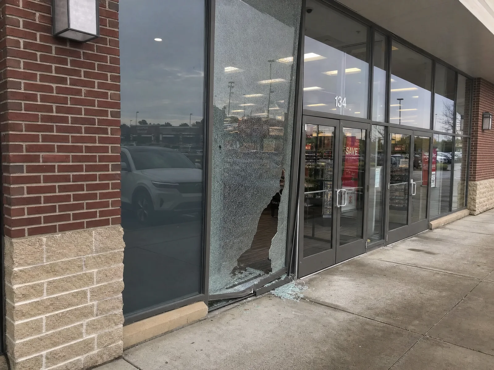
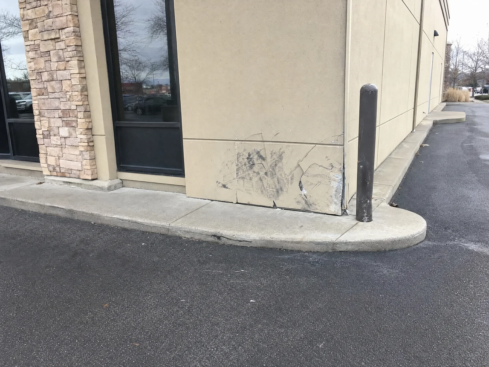

When property damagecan’t be ignored.
Temporary securing and follow-up repair planning after unexpected commercial property damage. For urgent property needs, call to confirm availability and the response arrangement; a form submission does not dispatch a responder.
When damage can't wait,
call. Don't fill out a form.
A clear call path gets the right people moving. Here's exactly what happens after you dial.
- 01
Make it safe first
If anyone is at risk, call 911 first. Keep people clear of the affected area.
- 02
Call IVO
A person takes your property address, the condition, whether the space is occupied and who can authorize the work.
- 03
Crew dispatched
We confirm an arrival estimate and keep you updated by text until the crew is on site.
- 04
Secure & document
Temporary securing or protection, with photos of the condition before and after.
- 05
Plan the permanent fix
A written repair plan and documents your insurer will ask for, all in one record.
For urgent commercial property damage in Washington, Oregon, and Idaho.
- Property address & entry point
- What happened & when
- Is the space occupied or open to the public?
- Site contact & who can approve work
- Photos, if it's safe to take them (we'll text you a link)
You bring the requirement.
We help define the path.
Every request follows the same visible steps, so you always know where the work stands and who has the next action.
Share the need
Tell us the location, condition, objective and timing.
Review & define the scope
Review available information, clarify the work and discuss the appropriate next step.
Coordinate the work
Coordinate resources, the defined scope and project communication.
Document completion
Review applicable closeout items and communicate where the scope stands.
Separate the urgent condition from the permanent repair.
Unexpected property damage can create several decisions at once: whether an area can be accessed safely, what temporary protection may be appropriate and what the building will need afterward. A clear account of the condition helps distinguish those decisions instead of treating them as one undefined assignment.
Establish the immediate facts
Report the affected opening or area, whether the property is occupied and what steps have already been taken. Give the team an authorized property contact and explain any directions from emergency responders or building professionals. Do not enter an unsafe area to improve the information in a request.
Confirm the response arrangement
A submitted form does not reserve resources or establish an arrival time. Confirm that the request has been received and that the proposed scope and timing are understood. Temporary securing, investigation and permanent repair may involve different resources and approvals.
Leave a clear handover
Document the condition, the measure taken and the items that remain unresolved. A useful handover tells the property team what was addressed and what still needs a decision, without implying that temporary protection resolved every underlying issue.
A damaged storefront opening needs a next step.
An illustrative requirement: an opening is damaged and the property team needs to discuss temporary securing before a permanent replacement can be planned. The review distinguishes the immediate exposure from dimensions, materials and approvals relevant to later repair.
- Share the condition and an authorized contact from a safe location.
- Confirm the available response and the temporary scope being discussed.
- Keep follow-up repair information linked to the original request.
What IVO can
organize for you.

01 / CapabilitySecuring & temporary protection
Applicable property-response scopes include damaged openings, board-ups, temporary securing and physical protection following unexpected commercial property damage.
Unexpected damage can leave a commercial property exposed before a permanent repair can be planned. An opening may need temporary protection, an entry may be unusable or a damaged component may affect access. Explain the immediate condition and who is responsible for the property so the request can be assessed in context.
Temporary measures are intended to address an identified exposure within an agreed scope. Their suitability depends on the actual condition, materials and access available. They should not be treated as a guarantee that a building is structurally safe or that every underlying cause has been resolved.
Discuss this requirement →
02 / CapabilityFollow-up repair
Temporary protection and permanent repair may require separate scopes. Document the affected areas, current condition and any known restrictions so the appropriate next step can be reviewed.
After the immediate condition has been addressed, the property may need replacement materials, matching finishes or a more detailed repair plan. Separate what was done temporarily from what remains outstanding. A clear handover helps the property team decide the next action without assuming that securing the opening completed the full repair.
Permanent work may depend on dimensions, product availability, tenant requirements and approvals from the responsible parties. Keep those decisions connected to the original incident record so the history of the condition remains understandable.
Discuss this requirement →Find the details
you need.
Practical notes on what to send, how the work is organized and how decisions are recorded.
Safety comes first
For immediate threats to life, active fire, crime or other public-safety emergencies, contact the appropriate emergency authorities first. A portal request does not dispatch emergency responders.
Do not enter an unsafe area to collect photographs or measurements. Describe known hazards from a safe location, and follow directions from the responsible authorities or property professionals. Report whether utilities, access or occupancy have been restricted; a commercial service request is separate from public emergency response.
Information for the response review
Provide the property location, contact person, damage description, photos and known access conditions. Tell the team whether the property remains occupied or operational.
Useful information includes which opening or area is affected, whether the building can be secured, when the condition was discovered and who can authorize access. Note any steps already taken by the property team or another responder. Photographs should show the relevant condition without exposing unrelated personal information.
01Availability & scope
Response depends on the condition, location, required resources and availability. Confirm the agreed scope and timing with the team; submitting a request does not guarantee an immediate response.
The team must confirm whether the request can be addressed, what resources are appropriate and what timing is available. A submitted form or voicemail is not a confirmed dispatch. For an urgent property condition, use the direct contact information and obtain a response before relying on an attendance time.
02Documentation & approvals
Keep photographs, temporary-protection records and repair information with the request. Required credentials and authorizations must be confirmed before work begins.
Record the condition observed, the temporary measure authorized and any limitations or follow-up items communicated to the property contact. Customers may need these records for their internal reporting or discussions with other parties. IVO documentation does not determine insurance coverage or replace the customer’s claim process.
Emergency first.
Every tier written down.
Emergency calls are answered around the clock. Everything else follows the same written targets as the rest of IVO.
Unsafe or unsecured
- Call answered
- By a person
- Crew on site
- Target within 4 hours in served metros
- Next step
- Temporary securing on the first visit. Written plan within 24 hours
Broken storefront or entry, active leak, impact damage, an opening that can't be locked.
Affecting operations
- Reply
- Within 2 business hours
- On site or assessed
- Within 1 business day
- Next step
- Fix or written plan within 2 business days
A failed door closer, a damaged fixture in a public area, a repair blocking a tenant.
Repairs & turnovers
- Reply
- Same business day
- Site visit or scope call
- Within 2 business days
- Written estimate
- Within 5 business days of a complete scope
Drywall and paint repairs, suite make-ready, hardware, flooring and finish work.
Planned work
- Reply
- Within 1 business day
- Bid / no-bid decision
- Within 2 business days
- Proposal
- By the bid deadline, or a date agreed with you
Tenant improvements, renovations, GC trade packages and multi-trade projects.
Business hours are Monday–Friday. Arrival times depend on location, access and safety conditions, and we always give you a confirmed estimate on the call. A submitted form does not dispatch a crew, so for emergencies always call.
Before the next step.
Still have a question? Call (206) 539-9549 or email office@ivoservgroup.com.
Does submitting a portal request dispatch a responder?
No. Use the direct contact information for an urgent property condition and obtain confirmation of the response arrangement. For threats to life, fire, crime or another public-safety emergency, contact the appropriate emergency authorities first.
Are temporary protection and permanent repair the same scope?
They may be separate. Temporary measures address an identified exposure under the agreed conditions. Replacement materials, matching finishes and permanent corrective work can require their own assessment, proposal and authorization.
Can the documentation be used for our property records?
Relevant photographs, messages and agreed completion information can support your internal record of the incident. They do not determine insurance coverage or replace an insurer’s requirements or the work of the appropriate building professionals.
Explore other
service paths.
Property Services
Repairs, turnovers and ongoing support that keep properties leasable and running.
Commercial Construction
Tenant improvements, renovations, build-outs and defined trade packages.
Specialty Services
Property modifications, multi-trade work and scopes that don’t fit a standard label.
Start with one project.
Let us earn the next one.
Tell us what the property needs. We’ll help identify the appropriate next step.